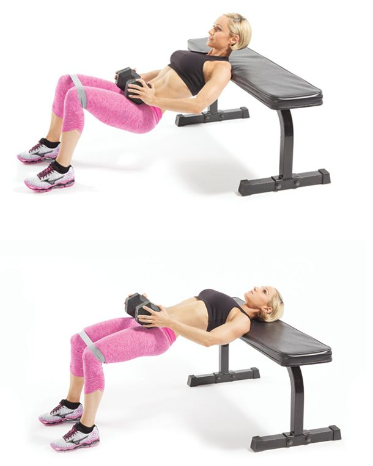

Leg Day Workout
With summer just around the corner everyone wants to look and feel their best.
This easy 45 minute workout can be done anywhere and only requires two dumbbells.
You can use any weight dumbbells that you are comfortable with, just remember to challange yourself!
As a warm up, start your workout with a one mile run. You can either run on the treadmill or outside.
Repeat each superset three times before moving on to the next one
Superset 1
1. Weighted sumo squat with a dumbbell x10 times

2. Split squat x10 on each leg with a dumbbell in each hand

Superset 2
1. Walking lunge with a dumbell in each hand x20
2. Wall sit for 45 seconds

Superset 3
1. Jump squats x10
2. Hip Thrust x15 with a dumbbell on hips
That is the end of the workout. Refer to the chart below for a weekly workout schedule that will guarantee you the best results.
If you click on the HIIT workout, it will take you to my three favorite HIIT workouts to choose from.
| Monday | Tuesday | Wednesday | Thursday | Friday | Saturday | Sunday |
|---|---|---|---|---|---|---|
| Legs | Chest and Triceps | Abs | Biceps, Back and Shoulders | Legs | HIIT | Rest Day |